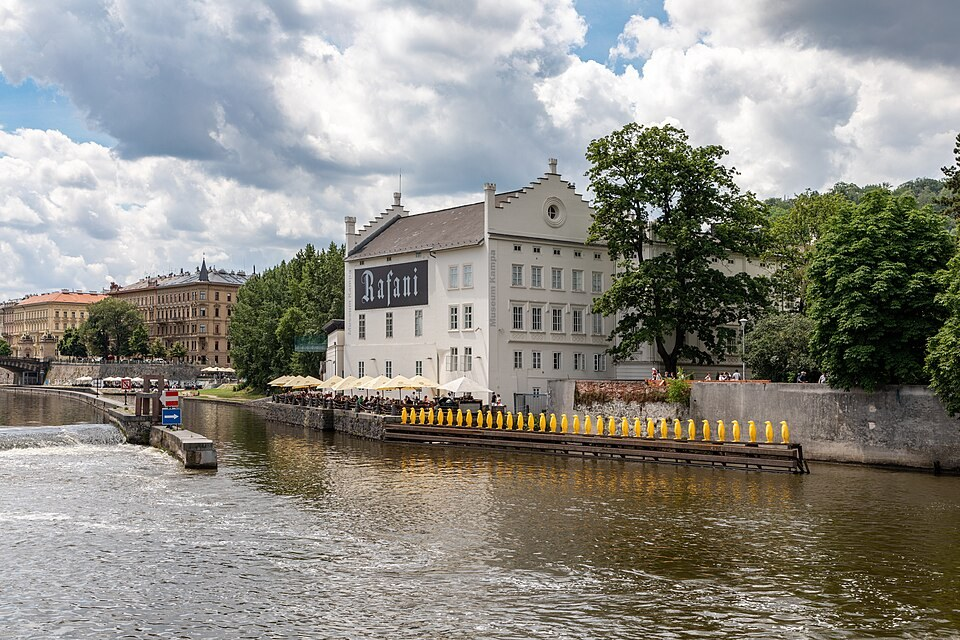

Kampa szigete és a sárga pingvinek (Kampa)
Kampára a Károly híd kisoldali végének közeléből is könnyen leereszkedhetünk. A folyópart és a Čertovka csatorna közé fogott terület a nagy átkelőhöz képest nyugodtabb világot kínál. Északon házak és kisebb utcák, délebbre parkos részek követik egymást. Érdemes úgy bejárni, hogy közben hol a folyó, hol a keskenyebb vízág felé fordulunk.
A Čertovka neve Ördögpatakként is ismert a városi történetekben. A csatorna mellett a régi malmok és vízkerekek a gyakorlati városi életre emlékeztetnek. A víz itt nemcsak romantikus látványelem, hanem energia és munkalehetőség is volt. Figyeljük meg, milyen közel épültek a házak a vízhez.
A parkos környezetben a folyó nagyobb léptéke fokozatosan újra megjelenik. A túlpart házsora és a hidak jó viszonyítási pontot adnak. A sétányon néhány perc alatt más nézőpontból láthatjuk ugyanazt a várost, amelyet korábban a hídról figyeltünk. A partvonalhoz közel kerülve a víz mozgása sokkal erősebben alakítja az élményt.
A Museum Kampa az egykori Sova malmok épületegyüttesében működik. A modern művészet itt történeti ipari környezetet kapott. Az épület és a körülötte megjelenő alkotások együtt mutatják, hogyan találhat új szerepet egy régebbi városi helyszín. A múzeum meglátogatása a szabadtéri sétánál jóval több időt is megérhet.
A folyó mellett sorakozó sárga pingvinek a Cracking Art alkotócsoport munkájához tartoznak. A játékos figurák mögött környezeti kérdésekre irányuló figyelem is áll. A sorban álló madarak egyszerre tűnnek vidámnak és kissé idegennek a városi vízparton. Érdemes távolabbról is megnézni őket, hogy a mű és a folyó kapcsolata együtt jelenjen meg.
Kampa legjobb élménye sokszor a különböző részletek közötti lassú átmenetből adódik. A malomkerék, a park, a modern szobrok és a folyópart ugyanannak a sétának eltérő állomásai. Ne csak egyetlen fényképezési pontot keressünk, hanem hagyjunk időt a környezet változásaira is. A közelben fekvő Lennon falhoz innen már egy egészen másfajta városi történet vezet tovább.
50.084201, 14.408022